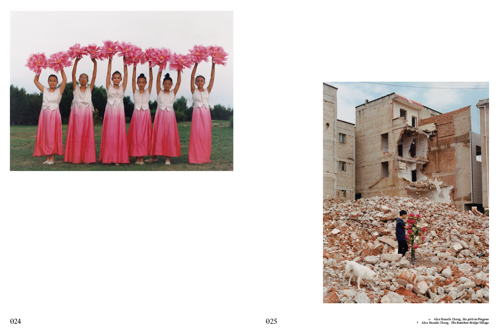
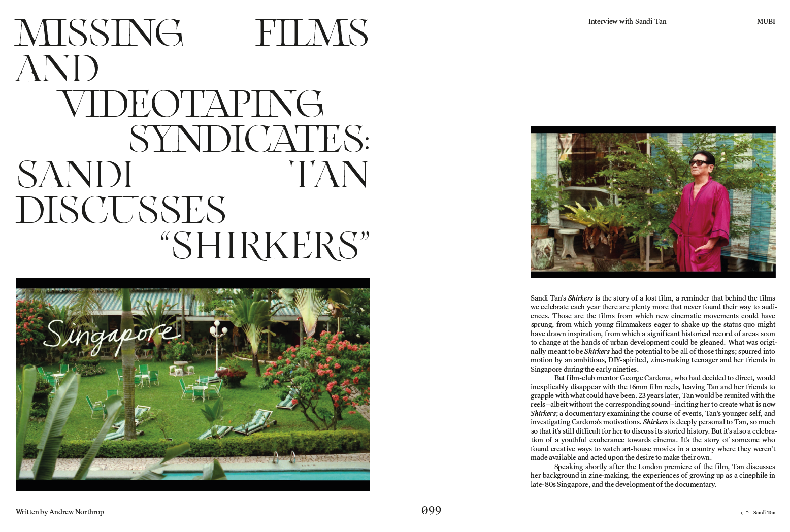
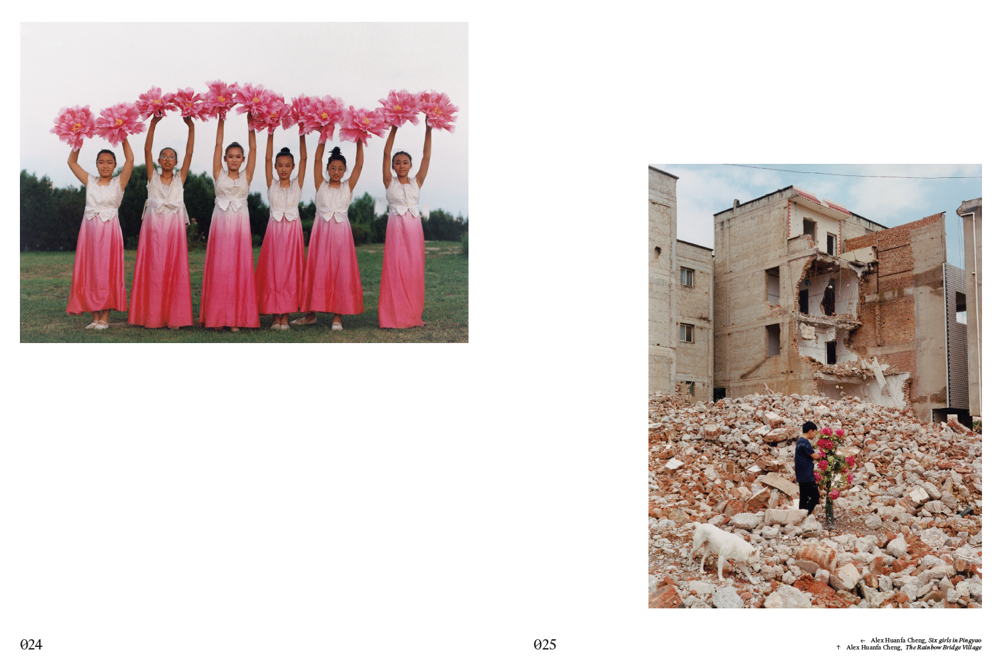
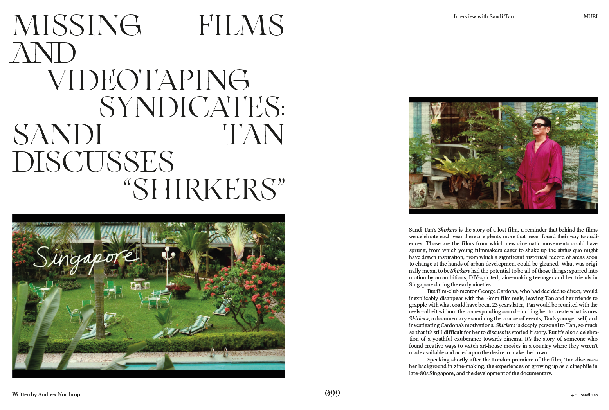

Limited to 150 copies, Fruta explores various interpretations of the ultimate symbol - fruits.
A navigation of conflicting themes - sustenance, fertility, violence, family, desire - fruits are woven into the personal, political, cultural.
Contributors:
Abbas Zahedi,
Pablo Neruda,
Lars Moereels & Michaël Smits of Lacuna Studios,
Wan Hertz,
Metavee Varintaravejh,
Hare Christian,
Frances Ellen Watkins Harper,
Johnny Nghiem,
Corryn Pettingill,
Miet Warlop,
Nataliya Goryacheva,
Mamali Shafahi,
Kim Rosario,
Carlos Ballesteros,
Laura Rodríguez Presa,
Isabella Carolina,
Yung Nollywood,
Todd Wehrkamp,
Raed Yassin,
David Onri Anderson,
Genevieve Verdigel,
Dennis Eichmann,
Livien Yin,
Isabel Reitemeyer,
Maness,
Leslie Shang Zhefeng,
Simamkele Dlakavu,
George Nebieridze,
Adam Leith Gollner,
Daniel Melfi,
Alix-Rose Cowie,
Svava Tergesen,
Juan Sebastián García del Castillo,
Liza Scholtz,
Celeste Jacobs,
Maciek Jasik.
Cover by Lacuna Studios (Lars Moereels & Michaël Smits)
(Blue Hour for Klub Dramatik 2022)
Edited & Curated by Gabriella Achadinha
Designed by
Max Coupe,
Jan Christoph Reinicke
&
Alicia Godel
220 pages / Advertising-free / 230 x 330mm
All text in English


Pétala revolves around various intriguing interpretations of the floral.
Studio Saudari invited artists, writers, photographers, chefs and academics to explore the theme of flowering and what it signifies within their lives and current situation.
Contributors:
Carlito Schiliro,
Zoya Pon,
Caroline Heinecke,
Sandi Tan,
Azuma Makoto,
Emma Gilpin,
Rose Lowder,
Paul Gilpin,
Nico Krijno,
Grace Cross,
Lilli Waters,
Mali Moir,
Musfira Schaffi,
Noor Hindi,
Conny Maier,
Brian Charlie,
Flavia Daniele,
Alexis Jamet,
Studio Végété,
Daniel Weigel,
Tiffany Joy Schouw,
Carlota Mir,
Mary Kocol,
Georgia Hilmer,
Klaudia B. Lewandowski,
Monika Kluza,
Liza Scholtz,
Jen Gough,
Isaac Zavale,
Postal Petals,
Anne-Laure Etienne,
Alka Dass,
Theresa Reimann-Dubbers,
Lorraine Hellwig,
Beatrice Oettinger,
Ana Beltschewa,
Sitaara Stodel,
Lillian Ceben,
Amanda González Alarcón,
Caroline Wimmer,
Lisa Yang,
Wilhelm Eduard Nöffke,
Kriss Munsya,
Laura Zalenga,
Isobel Edwards,
Susanne Nips,
Jodi Redelinghuys,
Hannah Francke,
Jamar Graham,
Regina Anzenberger,
Gugu Game,
Charlotte Ernst,
Luisa Hanika,
Zandile Tshabalala,
Sophie Rawlingson,
Harriet Banfield,
Tumi Erasmus,
Nino Samkharadze,
Juan Salazar.
Covers by
Alex Huanfa Cheng
&
Julia Sumangil
Edited & Curated by Gabriella Achadinha
Designed by
Max Coupe,
Jan Christoph Reinicke
&
Alicia Godel
254 pages // 8.5 x 11 inch // Soft cover // Advertising-free
All text in English, additional French & Spanish